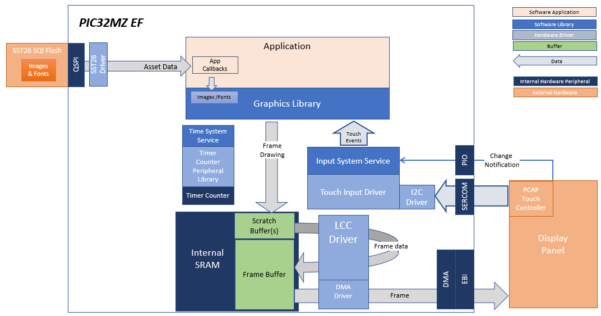
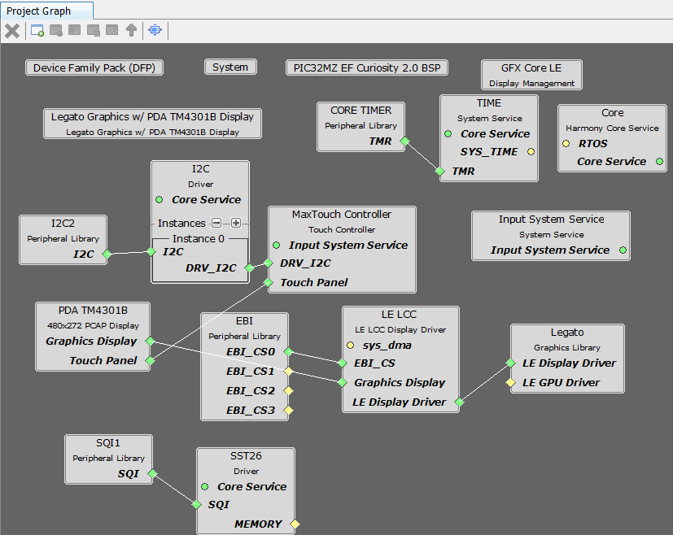
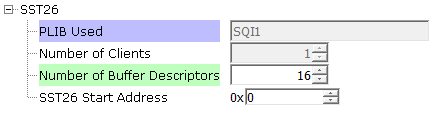
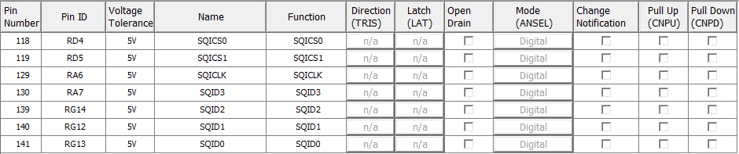
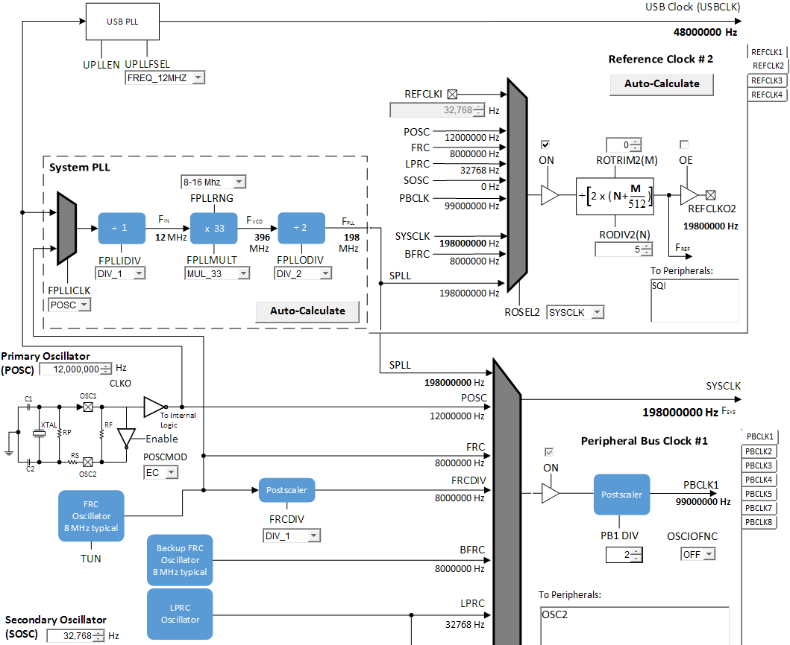
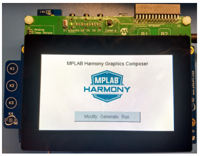

|
MPLAB® Harmony Graphics Suite
|
|
MPLAB® Harmony Graphics Suite
|

The legato_quickstart_external_resources (external flash reader) application uses the reads previously programmed binary data from the external non-volatile QSPI memory. The Graphics Library is used to render graphics to the display. Using the DMA, the Low-Cost Controllerless (LCC) Display Driver continuously transfers frame data from the frame buffer out to the LCD display.
The application also features user touch input through the integrated touch screen on the display panel. Touch input from the touch controller goes through the I2C port, and the Input System Service acquires the touch input information from the Touch and I2C drivers. The Input System Service sends touch events to the Graphics Library, which processes these events and updates the frame data accordingly.
This configuration runs on the PIC32MZ EF Curiosity 2.0 with RGB565 GFX Interface board and WQVGA display. The Low-Cost Controllerless (LCC) display driver is used to manage the DMA that transfers the read frame buffer contents to the display via the EBI peripheral. The Legato Graphics Library draws the updated sections of the frame to an internal scratch buffer which is used by the LCC display driver to update the frame buffer.
User touch input on the display panel is received thru the PCAP capacitive touch controller, which sends a notification to the Touch Input Driver. The Touch Input Driver reads the touch information over I2C and sends the touch event to the Graphics Library thru the Input System Service.
The application reads the binary data from the external non-volatile memory via the QSPI peripheral configured with the SST26 driver.

Adding the “PIC32 MZ EF Curiosity 2.0 BSP” and “Legato Graphics w/ PDA TM4301B Display” Graphics Template component into the project graph.
This will automatically add the components needed for a graphics project and resolve their dependencies. It will also configure the pins needed to drive the external peripherals like the display and the touch controller.
Additional components to support QSPI and SST26 needs to be added and connected manually. Some of these components are fine with default settings, while other require some changes. The following is a list of all the components that required custom settings.


We will need to use the 12 MHz oscillator crystal on the MZ EF Curiosity 2.0 to drive the USB PLL. Setup POSC, POSCMOD, System PLL, SYSCLK and REFCLK2 as shown:

The parent directory for this application is gfx/apps/legato_quickstart. To build this application, use MPLAB X IDE open the gfx/apps/legato_quickstart/firmware/legato_qs_e70_xu_tm4301b.X project file.
The following table lists configuration properties:
| Project Name | BSP Used | Graphics Template Used | Description |
|---|---|---|---|
| legato_qs_x_r_mzef_cu_tm4301b.X | PIC32MZ EF Curiosity 2.0 | Legato graphics w/ PDA TM4301b Display | PIC32MZ EF Curiosity 2.0 with 4.3” WQVGA PCAP Touch display |
**_NOTE:_** This application may contain custom code that is marked by the comments // START OF CUSTOM CODE ... and // END OF CUSTOM CODE. When using the MPLAB Harmony Configurator to regenerate the application code, use the "ALL" merging strategy and do not remove or replace the custom code.
Configure the hardware as follows:
The final hardware set-up should be:

When power-on is successful, the following screen will appear on the display

Pressing the button will cause the application to load a new image. The image cycles in order from Uncompressed RAW with Direct Blit, Uncompressed RAW, Run-Length Encoded (RLE) RAW, to JPEG.
The MPLAB Harmony Graphics Suite logo is also a button. Pressing the logo will toggle the application between English and Simplified Chinese.

Note that all images and glyphs are retrieved from external NVM via QSPI. The application is purposely setup in single-buffer configuration to allow visual inspection of the data retrieval speed of the various images and glyphs
 1.8.18
1.8.18